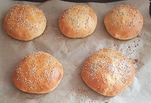
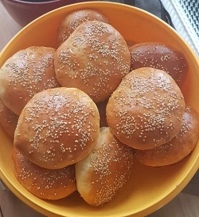
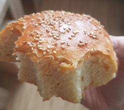
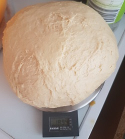

Burgerbuns
Zubereitungszeit: 120 min
Ergibt: 24 kleine / 16 große Buns

- 1 kg Mehl
- 1 Würfel frische Hefe
- 200ml warmes Wasser
- 30g Zucker
- 30g Zuckerrübensirup
- 260g Buttermilch
- 2 Eier
- 4 TL Salz
- 160g flüssige Butter
- 1 Eigelb mit 50 ml Wasser verrührt
- Sesam
- 70g flüssige Butter
- Mehl in die Schüssel geben, Hefe in eine Mulde bröseln, mit dem warmen Wasser, Zucker und Sirup auflösen, 10-15 min gehen lassen.
- Mehl mit der Hefemischung verrühren, Buttermilch, Eier, Salz und 160g flüssige Butter hinzugeben und verkneten.
- Teig gute 10 min kneten, 1h mit nassem Handtuch zugedeckt gehen lassen.
- Teig erneut kneten, 80-120g Buns abstechen, zu Kugeln "schleifen", sodass die Naht unten liegt. Brötchen aufs Blech setzen, platt drücken.
- Eigelb-Wassermix auf die Buns streichen, mit Sesam bestreuen, 15 min gehen lassen, dann ca. 15 min bei 190°C Ober-/Unterhitze backen.
- Nach dem Backen sofort mit der restlichen flüssigen Butter bestreichen. Burgerbuns können auch gegrillt oder eingefroren werden.


